Ce module a pour but de vous sensibiliser à l’importance de la réglementation environnementale et à ses implications pratiques sur une usine d’incinération de déchets dangereux. Vous verrez que l’auto-surveillances des différents rejets (atmosphériques, aqueux, résidus) est une composante importante de nos métiers et un savoir-faire.
Vous apprendrez à connaître les différents types d’analyseurs en continu des émissions atmosphériques, les systèmes de prélèvement ponctuels, les analyses réalisées et la gestion de toutes ces données environnementales.
Une usine d'incinération de déchets produit trois types d'émissions différentes :
L'arrêté préfectoral fixe les exigences réglementaires en termes de seuils de rejets et de contrôle. Il respecte a minima les exigences de l'arrêté ministériel sur l'incinération, publié le 20 septembre 2002 (appliquant la directive européenne 2000/76/CE).
Article 9
tcolorbox[colback=blue!5!white,colframe=blue!75!black] Les installations d’incinération sont exploitées de manière à atteindre un niveau d’incinération tel que la teneur en carbone organique total (COT) des cendres et mâchefers soit inférieure à 3\ tcolorbox
La qualité des mâchefers doit être contrôlée régulièrement, par les opérateurs de l'incinérateur (aspect visuel lors des contrôles) et par le laboratoire.
Article 9 (suite)
tcolorbox[colback=blue!5!white,colframe=blue!75!black]
Les installations d’incinération sont conçues, équipées, construites et exploitées de manière à ce que, même dans les conditions les plus défavorables que l’on puisse prévoir, les gaz résultant du processus soient portés, après la dernière injection d’air de combustion, d’une façon contrôlée et homogène, à une température de 850 ° C pendant deux secondes, mesurée à proximité de la paroi interne ou en un autre point représentatif de la chambre de combustion défini par l’arrêté préfectoral d’autorisation. Le temps de séjour devra être vérifié lors des essais de mise en service. S’il s’agit de déchets dangereux ayant une teneur en substances organiques halogénées, exprimée en chlore, supérieure à 1 p. 100, la température doit être amenée à 1100 ° C pendant au moins deux secondes. tcolorbox
[…] tcolorbox[colback=blue!5!white,colframe=blue!75!black] Chaque ligne d’incinération est équipée d’au moins un brûleur d’appoint, lequel doit s’enclencher automatiquement lorsque la température des gaz de combustion tombe en dessous de 850 ° C ou de 1100 ° C, selon le cas, après la dernière injection d’air de combustion. Ces brûleurs sont aussi utilisés dans les phases de démarrage et d’extinction afin d’assurer en permanence la température de 850 °C ou de 1100 ° C, selon le cas, pendant lesdites phases et aussi longtemps que des déchets non brûlés se trouvent dans la chambre de combustion. tcolorbox
[…]
tcolorbox[colback=blue!5!white,colframe=blue!75!black] Les installations d’incinération et de co-incinération possèdent et utilisent un système automatique qui empêche l’alimentation en déchets :
Cet article implique un suivi très rigoureux de la température de combustion. Le conducteur de four doit être très vigilant afin d’éviter la sécurité « arrêt déchets sur température basse » ou « arrêt déchet sur dépassements émissions ». Il est aidé dans sa conduite par des alarmes en anticipation qui le renseignent sur une dérive du procédé.
Article 18
tcolorbox[colback=blue!5!white,colframe=blue!75!black] Les valeurs limites d'émission sont respectées si :
Cet article exige de l’exploitant qu’il soit capable de mesurer en continu les polluants suivants : HCl, SO2, Poussières, CO, COT, NOx. (concernant HF, la plupart des usines ont une dérogation qui considère que si le traitement est efficace sur HCl, il l’est a fortiori sur HF, plus réactif). De plus l’exploitant doit être en mesure de présenter le détail de ses émissions (moyenne 10mn, ½ h et journalière), de compter les dépassements et de les expliquer.
Article 18 (suite)
tcolorbox[colback=blue!5!white,colframe=blue!75!black] Pour qu’une moyenne journalière soit valide, il faut que, pour une même journée, pas plus de cinq moyennes sur une demi-heure n’aient dû être écartées pour cause de mauvais fonctionnement ou d’entretien du système de mesure en continu. Dix moyennes journalières par an peuvent être écartées au maximum pour cause de mauvais fonctionnement ou d’entretien du système de mesure en continu. tcolorbox
Ce texte impose à l’exploitant de suivre précisément le temps de fonctionnement de ses analyseurs. Concrètement, il faut compter les temps de panne, les temps de calibrage 0, les temps d’étalonnage, les temps d’indisponibilité de la base de données informatiques.
Le traitement des fumées est obligatoire pour les usines d'incinération. Le traitement des gaz de combustion est obligatoire pour les installations d’incinération.
Les installations d’incinération d’ordures ménagères existantes doivent appliquer depuis 1991 des valeurs limites d’émission de polluants. Depuis février 1997, les nouvelles installations doivent appliquer des valeurs limites d’émission encore plus sévères.
Valeur limite d’émission : c’est une teneur ou concentration à ne pas dépasser. Elle doit être exprimée en mg/Nm3 ramené à 11\
Valeurs limites journalières d'émission de polluants pour les installations existantes (Arrêté du 20 septembre 2002) :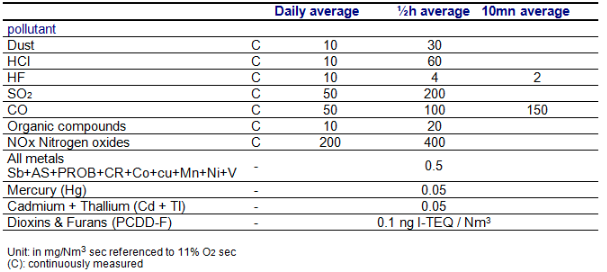
Voir fiche index : Réglementation applicable aux systèmes d'incinération des déchets dangereux, Unité no. 3.
Chaque incinérateur est différent. Les gaz de combustion contiennent un pourcentage d’oxygène spécifique pour chaque unité. Plus ce pourcentage sera élevé et plus les polluants contenus dans ces gaz seront dilués, et, par conséquent, afficheront une concentration en mg/m3 plus faible. Cet oxygène provient de l’excès d’air de combustion et aussi d’infiltration d’air dans le système car celui-ci est maintenu sous une pression négative crée par le ventilateur de tirage raccordé à la cheminée.
Pour palier ce problème, les réglementations imposent une façon standard de comparer les gaz de combustion. Elles exigent que les concentrations mesurées soient recalculées pour les exprimer au niveau qu’il aurait été possible de les mesurer si les gaz de combustion avaient tous eu le même pourcentage d’oxygène. La réglementation française et européenne fixe ce pourcentage de comparaison standard à 11\
Pour des raisons identiques il faut choisir, si on exprime la concentration en polluants d’un gaz de combustion sous une base humide ou sèche. Comme les gaz de combustion peuvent facilement contenir jusqu’à 15\
La température et la pression sont aussi des facteurs importants à normaliser pour bien s’assurer que l’on mesure une quantité de polluants sur des quantités de gaz qui sont comparables : les concentration sont toujours exprimées en mg ou ng par Normal mètre cube (Nm3), concept étudié aux modules 3 et 5. La réglementation fixe les conditions du Normal mètre cube à 0 °C pour la température et à 101,3 kPa pour la pression.
Article 26
tcolorbox[colback=blue!5!white,colframe=blue!75!black] L’arrêté préfectoral d’autorisation fixe la périodicité des contrôles à réaliser. Cette périodicité est au moins trimestrielle pour les résidus d’épuration des fumées.
La teneur en carbone organique total ou la perte au feu des mâchefers est vérifiée au moins une fois par mois et un plan de suivi de ce paramètre est défini. tcolorbox
Le contrôle des REF permet également de réaliser des bilans matières sur les polluants et de mieux connaître les points de fonctionnement du système de traitement des fumées.
Article 21
tcolorbox[colback=blue!5!white,colframe=blue!75!black] Les effluents aqueux issus des installations de traitement des déchets doivent faire l’objet d’un traitement permettant de satisfaire aux points de rejet aux valeurs limites de rejet fixées à l’annexe 4. Les effluents sont ceux notamment issus des opérations suivantes :
Ces dispositions ne concernent ni les eaux de ruissellement qui ne sont pas entrées en contact avec les déchets ni les eaux usées domestiques. [] tcolorbox
Article 29
tcolorbox[colback=blue!5!white,colframe=blue!75!black]
L’exploitant doit mettre en place un programme de surveillance de ses rejets aqueux. Les mesures sont effectuées sous la responsabilité de l’exploitant et à ses frais dans les conditions fixées par l’arrêté d’autorisation, qui sont au moins celles qui suivent. Des fréquences supérieures peuvent être définies par l’arrêté d’autorisation lorsque la sensibilité du milieu récepteur le justifie.
L’exploitant doit réaliser la mesure en continu des paramètres suivants : pH, température, débit et concentration en C.O.T. Dans le cas où des difficultés sont rencontrées pour la mesure du C.O.T. en continu en raison de la présence de chlorures, la mesure de C.O.T peut être réalisée à fréquence journalière, sur échantillonnage ponctuel.
L’exploitant doit également réaliser des mesures journalières sur échantillonnage ponctuel de la quantité totale de solides en suspension et de la demande chimique en oxygène, sauf si cette mesure n’est pas compatible avec la nature de l’effluent, et notamment lorsque la teneur en chlorure est supérieure à 5 g/l.
L’exploitant doit en outre faire réaliser par un organisme compétent des mesures mensuelles, par un prélèvement sur 24 heures proportionnel au débit, des paramètres suivants : métaux (Hg, Cd, Tl, As, Pb, Cr, Cu, Ni et Zn), fluorures, CN libres, hydrocarbures totaux, AOX et demande biochimique en oxygène.
Il doit enfin faire réaliser par un organisme compétent au moins deux mesures par an des dioxines et des furannes. Au cours de la première année d’exploitation, une telle mesure est réalisée tous les trois mois.
tcolorbox
Les valeurs limite d’émission dans le milieu naturel sont donnés au module 3.
L’ article 30 impose des contrôles réguliers de la qualité des aquifères, c’est à dire des eaux souterraines au droit de l’usine.
L’article 31 demande le suivi de l’impact sur l’environnement par des méthodes de quantification des retombées polluantes. Il s’agit de mettre en place un programme de prélèvement et d’analyse de substrats autour de l’usine.
Les exigences réglementaires, on l’a vu, sont très fortes en matière d’auto surveillance sur les usines d’incinération. Il en résulte que ces usines sont très bien équipées en matériels de prélèvement et de mesure, et en personnel compétent pour maintenir et utiliser ces appareils.
Rôle
Selon leur localisation, ils fournissent soit des information purement de process, soit des valeurs d’émissions réglementaires.
Analyseurs de process
Installés tout au long du process, ils donnent des informations qui permettent de d’optimiser la conduite des procédés :
Analyseurs réglementaires
Il s’agit des analyseurs installés à la cheminée. Ce sont les indicateurs de la performance environnementale et réglementaire de l’incinérateur.
Le schéma ci-dessous montre un exemple de la disposition des analyseurs process et réglementaire (en bleu) sur une ligne d’incinération.
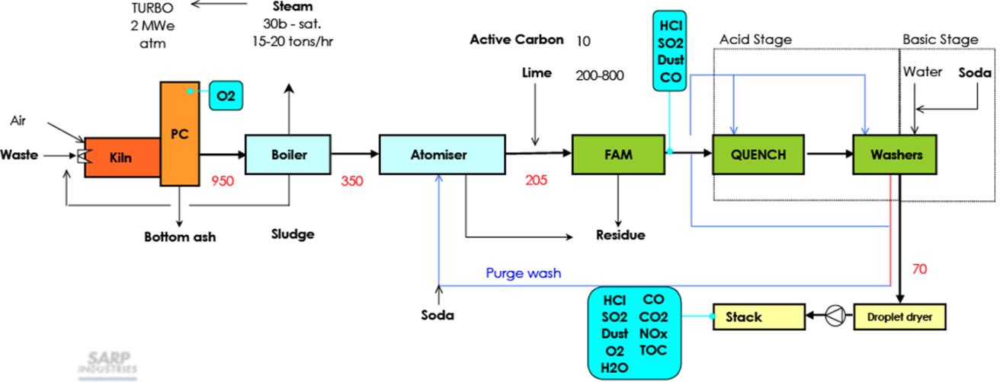
Principes de mesure pour les analyseurs Analyseur d'échantillons / Analyseur in situL’analyseur par prélèvement possède une ligne d’échantillonnage, et une pompe, qui aspire les fumées vers la cellule d’analyse. De cette manière un temps d’échantillonnage est introduit et décale le signal délivré par rapport au phénomène réel. Le gaz peut ensuite être séché ou au contraire maintenu à température élevée pour éviter la condensation d’eau. Enfin, il est généralement analysé dans la cellule de mesure par un système optique (émission de lumière à travers la cellule et réception/analyse de la lumière). Ces analyseurs sont généralement installés en cheminée, pour l’analyse réglementaire.
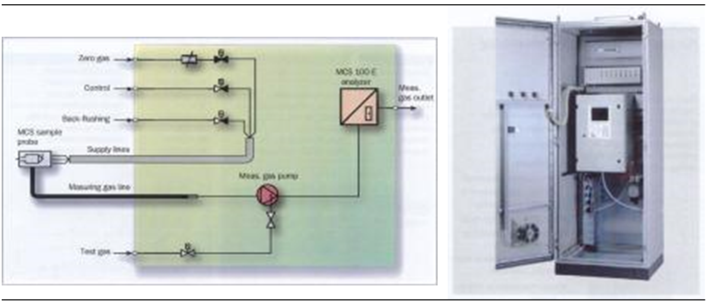
{Multigas Analyzer SICK}L’analyseur in situ est composé d’un émetteur et d’un récepteur de lumière directement installés sur le conduit des gaz. Ce système est plus réactif que le système avec prélèvement. Par contre, il est installé dans un milieu plus difficile (poussières, diamètre du conduit) et la mesure est plus délicate. Ces analyseurs sont généralement installés en intermédiaire sur le process.
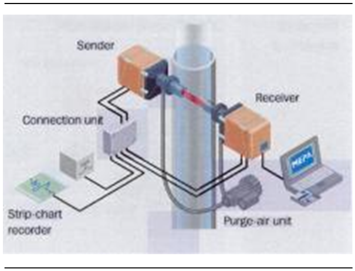
{Principe d'analyse IN-SITU}O2
Plusieurs techniques de mesure sont utilisées, par prélèvement ou in situ, pour mesurer ce paramètre fondamental de combustion.
Polluants HCl, SO2, CO, TOC, NOx
Tous ces polluants sont principalement analysés par Infra-Rouge (IR). Un rayon optique émis par une source IR traverse la chambre de mesure et est focalisé sur un détecteur IR. Chaque gaz à analyser présent dans le trajet optique absorbe le rayon optique à des longueurs d’ondes spécifiques et proportionnellement à sa concentration (loi de Beer-Lambert).
Des filtres interférenciels, délimitant une zone de longueurs d’onde, sont placés successivement devant la source lumineuse (grâce à un carrousel) et permettent de mesurer spécifiquement les absorbances des différents gaz. Grâce à la mesure de l’absorbance de référence du gaz à une concentration donnée, on en déduit alors la concentration dans l’échantillon.
Poussière
Les poussières sont mesurées généralement soit par opacimétrie, soit par jauge béta.
H2O
La vapeur d’eau est généralement mesurée par IR. Néanmoins, dans le cas de techniques de mesure avec prélèvement, elle peut être simplement éliminée par des sécheur.
Il est toujours extrêmement important de connaître la technique de mesure employée pour mesurer un élément afin de savoir si la valeur délivrée par l’analyseur est sur gaz sec ou humide.
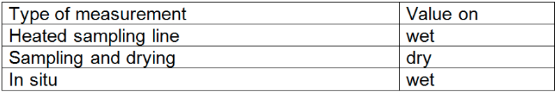
Il est aussi très important de savoir si les valeurs qui apparaissent sur les supervisons et dans les rapport ont été corrigées en H2O et/ou O2 ou s’il s’agit de valeurs ‘brutes’.
Débit
Le débit de fumées est un paramètre très important. En effet, les flux de polluants de l’installations sont calculés à partir des concentrations et du débit (attention à bien multiplier des concentrations en mg/Nm3 sec corrigés à 11\
La mesure est généralement fait par un tube multi-pitot, qui mesure la pression différentielle dans le conduit, ce qui permet de calculer la vitesse des gaz, et grâce à la géométrie du conduit, le débit.
Les échelles de mesure doivent être adaptées aux phénomènes que l’ont souhaite mesurer. En particulier, elles doivent être suffisamment étendues pour appréhender la variabilité des concentrations de polluants. Pour les mesures réglementaires, des étendues d’échelle de 2 fois la Valeur Limite d’Emission en moyenne ½ h, couvre de façon satisfaisant les phénomènes observés.
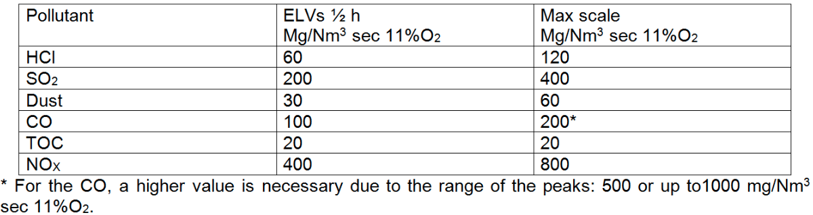
Plusieurs temps interviennent dans le processus d’analyse du phénomène physique et de traitement du signal généré. Temps d’acquisition de l’analyseur : c’est le temps nécessaire à l’analyseur pour produire une données pour un polluant donné. Ce temps est généralement de l’ordre de quelques secondes. La valeur délivrée est une moyenne glissante réalisée sur une à deux minutes.
Temps de rafraîchissement de la supervision : les données fournies par l’analyseur sont transmise directement au superviseur qui les affiche en salle de contrôle. Ces valeurs sont rafraîchies avec un rythme propre au superviseur (quelques secondes).
Temps d’acquisition du système de stockage et de traitement des données émissions : les données issues des analyseurs sont échantillonnés vers une base de données informatique avec un certain pas (1s, 30s, 60s). C’est à partir de cette base de données que seront effectués les calculs de correction et de moyenne.
Les analyseurs en continu sont étalonnés régulièrement, au moins une fois par an, lors de l’arrêt pour entretien de l’installation. Il s’agit d’un étalonnage externe, réalisé avec des gaz étalons en bouteille.
Exemple d’analyseurs utilisé sur les UIDD de SARPI
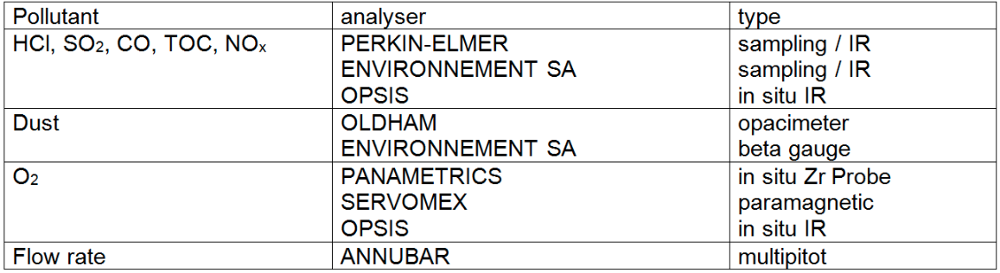
Certains polluants ne peuvent, dans l’état actuel des techniques, être mesurés en continu.
L’arrêté ministériel fixe une fréquence minimale pour la réalisation de ces mesures par des organismes agréés. Il s’agit principalement :
A cet effet, une plate-forme de prélèvement est installée sur la cheminée. Des brides normées permettent aux prestataires d’installer rapidement leur matériel de prélèvement.
Les Métaux réglementés par l'arrêté ministériel sont les suivants :
Les fumées sont prélevées pendant 2 heures à partir de la bride normé en cheminée. Le système de prélèvement est constitué d’une canne chauffée, d’un filtre, d’un condensateur et de flacons contenant des solution de barbottage. Le prélèvement doit être réalisé de manière isocinétique (la vitesse d’aspiration des fumées dans le système doit être égale à la vitesse des fumées dans la cheminée). Un compteur permet de connaître le volume de fumées aspiré pendant le temps du prélèvement.
Les métaux contenus dans les poussières sont piégés dans le filtre et les métaux sous forme gazeuse sont dissous dans la solution de barbottage.
Après analyse du filtre et de la solution en laboratoire, puis correction du volume de fumées prélevé et des conditions (O2, H2O), on obtient la concentration de chaque métaux dans les fumées, sous forme particulaire et sous forme gazeuse.
Nous avons vu que les PCDD-F sont des composés organiques présent à l’état de traces dans les fumées. Le prélèvement des ces composés est très délicat à réaliser. Une norme européenne décrit précisément les étapes à respecter. Néanmoins, les difficultés de ce prélèvement introduisent des incertitudes qui peuvent aller jusqu’à 100\ Prélèvement : le système de prélèvement, installés sur la bride normée, est le suivant :
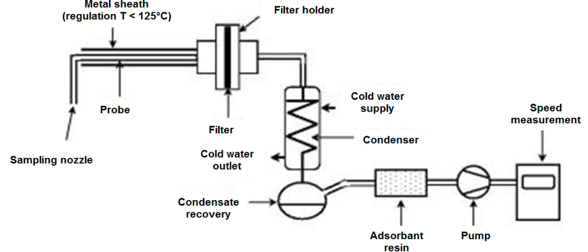
Les PCDD-F sont arrêtés sur le filtre et sur la résine absorbante. Extraction :ces deux substrats sont ensuite envoyés dans un laboratoire agréé qui procède dans un premier temps à l’extraction des PCDD-F à l’aide de solvants. Analyse : les PCDD-F en solution dans les solvants sont alors analysés par un spectromètre de masse à haute résolution. Le laboratoire délivre des résultats en ng par congénère dans les substrats.
Le rapport final du prestataire de service fait apparaître les conditions de la mesure, les résultats d’analyses dans la solution et enfin les résultats dans les fumées après les corrections habituelles (O2, H2O, et facteur de toxicité : ng I-TEQ / Nm3 sec 11\
Les analyseurs produisent énormément de données qui sont échantillonnées et stockées dans un système informatique. A titre d’exemple, avec une fréquence d’échantillonnage de 60s, nous obtenons 525 600 valeurs par polluant pour une année entière.
A partir de ces valeurs sont calculées, en temps réel, les moyennes 10mn, ½ h et journalières pour chaque polluant. Ces valeurs moyennes sont également stockées dans la base de données. On peut ensuite représenter ces ensembles par un spectre de répartition par polluant. Il présente le détail de la répartition des 15 000 moyennes ½ h de l’année par tranche.
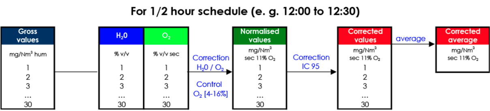
Les dépassements sont suivis en temps réel et même anticipés par le calculateur. Ce renseignement est fourni au chef de quart qui agit sur l’installation en connaissance de cause. Un récapitulatif des dépassements est réalisé mensuellement et envoyé aux autorités environnementales, avec les explications nécessaires.
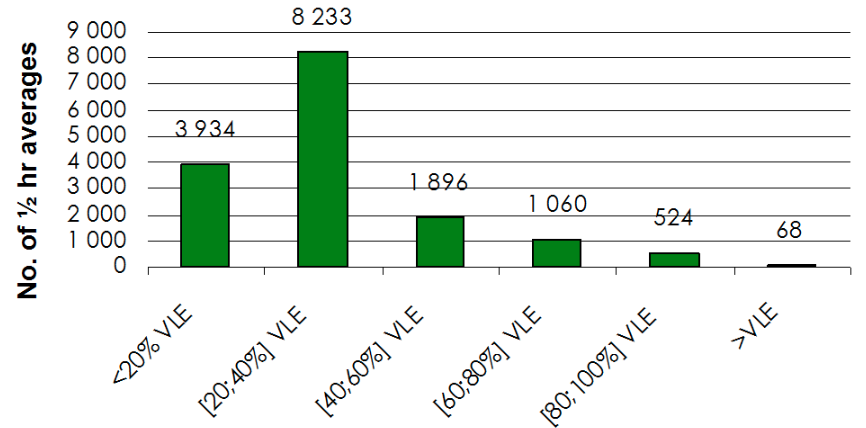
Les temps de marche et d’arrêt des analyseurs sont précisément consignés. L’absence de données venant de l’analyseur est renseigné avec détail : panne analyseur, auto-calibration…
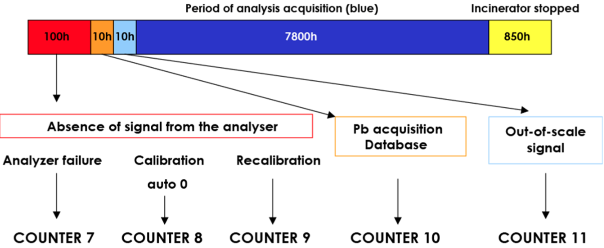
Les mâchefers sont contrôlés régulièrement par le personnel de quart lors des rondes (aspect visuel, odeur) et par le laboratoire sur des échantillons moyens (moyenne hebdomadaire des échantillons prélevés quotidiennement). Le prélèvement de l’échantillon de mâchefers est effectué avec soin, en sortie de l’extracteur, sur du mâchefer « frais ».
Les mâchefers doivent évidemment respecter la norme des 3\
Les Résidus d’Epuration des Fumées (REF) sont également suivi régulièrement (quotidiennement ou hebdomadairement), vis à vis de paramètres exploitation (Cl, S, réactif libre) et de paramètres « stockage » (lixiviation, fraction soluble…).
Les effluents concernés par l’arrêté ministériel (dépotage, entreposage, traitement des gaz, refroidissement des mâchefers, nettoyage des chaudières) sont traités et suivi afin d’atteindre les exigences de rejet réglementaires. Le pH et la température sont relevés en continu.
Pour les autres paramètres et pour des débits assez importants, un préleveur automatique réalise un échantillon moyen 24h qui est analysé le jour suivant au laboratoire de l’usine. Des contrôles sont réalisés par des organismes extérieurs conformément à la fréquence fixée par l’arrêté. De même que pour les émissions, un suivi précis des données effluents est réalisé (tableau récapitulatif, comptage et explication des dépassements…).
Les aquifères (nappe phréatiques) au droit de l’usine sont contrôlé régulièrement, conformément à la fréquence fixée par l’arrêté préfectoral.
Un programme de suivi des retombées atmosphériques dans l’environnement immédiat de l’usine est mis en place. Il peut s’agir d’installation de jauges de collecte en différents points de retombées du panache de fumées (fonction de la rose des vents du site). Il peut également s’agir de campagnes de prélèvement de terre ou de lichens.